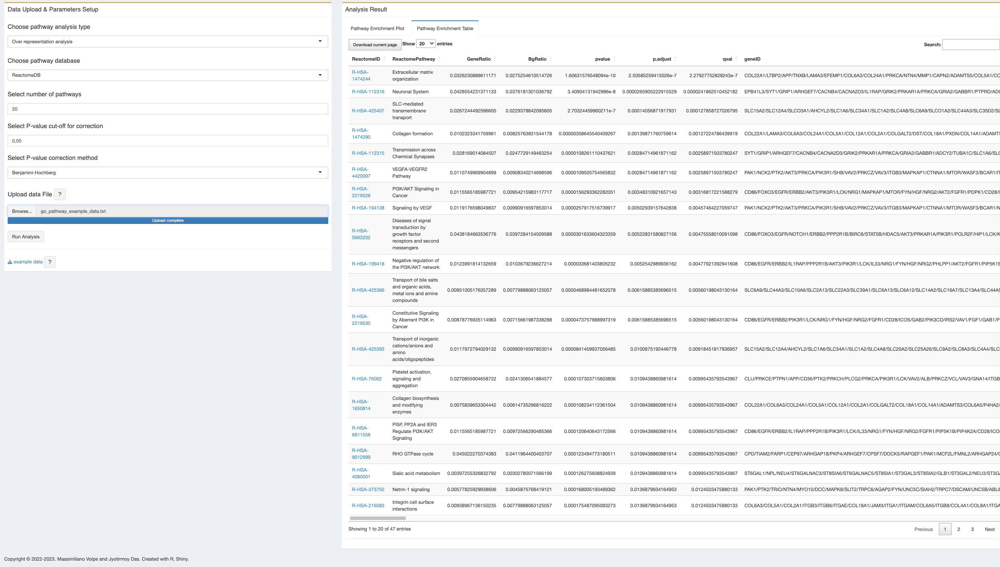

8 Pathway enrichment analysis
Pathway enrichment analysis helps the user to get the mechanistic insights of the important genes from genome-wide data analysis. In methylR, we introduced the pathway analysis module that can compute the enriched pathways from three different databases, KEGG (Kanehisa and Goto 2000), Reactome (Gillespie et al. 2021) and Wikipathways (Pico 2008; Martens et al. 2020).
8.1 How to use
8.1.1 Data upload & Parameters setup
8.1.1.1 Data upload
User can upload the direct output result from the main analysis. At present, user can upload the DMC data produced by the main analysis (See Chapter 1). The input file should be in a text (tab-delimited) format.
8.1.1.2 Parameters setup
- Choose pathway analysis type: Please select pathway analysis type from the drop-down list
- Over representation analysis (ORA);
- Gene set enrichment analysis (GSEA); By default, the tool will use the over representation analysis.
- Choose pathway database: user can choose to use different pathway database, namely
- Reactome,
- KEGG or
- Wikipathways.
- Choose number of pathways: Please select number of pathways for graphical display. The default is Top 20 pathways. The Top 20 enriched pathways is selected based on the adjusted P-values.
- If the analysis result does not get 20 pathways (as default setup) or the number selected by the user, then the plot will only shows the result with less number of pathways. User can change the parameters to see if they can get more number of enriched pathways.
- If there is no enriched pathways with selected parameters, the figure tab may show warning like “check the logs or contact the author” , please change the parameters and run again the analysis. If you are experiencing trouble, donot hesitate to contact us.
Select P-value cut-off for correction: The default value for p-value correction is set to 0.05. User can set their own cut-off values.
Select P-value correction method: The default method for adjustment of P-value is the Benjamini-Hochberg (BH) correction method. User can choose different method using the drop-down list:
- Benjamini-Hochberg (BH)
- Benjamini-Yeketuli (BY)
- Bonferroni
- Holm
- Hommel
- Hochberg
- FDR
- none
Upload data file: The input file should be in a text (tab-delimited) format. The user can upload the ChAMP result file (DMC file) directly for the analysis.
8.2 Analysis result
- Pathway enrichment plot: after “Run Analysis”, the plot will be generated as soon as computation has been done. Depends on the size of data, it might take few minutes (See Appendix D). At present the plot will be generated as a dot plot which is also a product of plotly, hence dynamic and have similar functionalities with mouse pointing. At present, with the mouse hover over, each dot will show the pathway name, count of genes from the input list for that particular pathway, the corrected p-value and gene ratio. The color scale bar shows in the legend. User can download the figure as PNG as described above and the dynamic figure as a html file.
- All dots (pathway enrichment terms) are clickable and will open a new tab with the respective pathway detail from the selected database (Reactome/KEGG/Wiki).
- The interactive figure can be downloaded as HTML file and PNG file. The HTML file is clickable and each pathway enrichment term can open the respective database for pathway details.

- Pathway enrichment table: with the same input file and parameter setup, user can also get the result as an excel file (current page as well as full table).

In the pathway enrichment table, the pathway ID is clickable and will open the respective pathway from the database. However, this feature is only avaible on the browser, if the user download the table, there is no such link to check the pathway source.
8.3 R packages used
TO ALL OUR USERS, IF YOU ARE EXPERIENCING ANY TROUBLE WITH THE APP, BEFORE SENDING THE BUG REPORT, PLEASE RESTART THE DOCKER CONTAINER AND TRY AGAIN.↩︎
Copyright © 2022-2023. Massimiliano Volpe and Jyotirmoy Das.